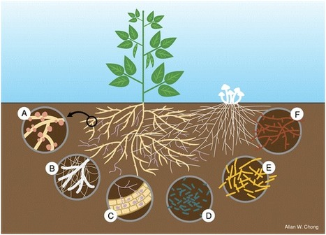

Toprakta bulunan mikroorganizmaların ve canlıların rolü.
Toprak Mikroorganizmaları:
Toprak, birçok farklı mikroorganizma türünün yaşadığı bir ortamdır. Bunlar arasında bakteriler, mantarlar, algler, protozoalar ve nematodlar gibi çeşitli mikroplar bulunur. Bu mikroorganizmaların birçoğu toprak sağlığı ve bitki gelişimi için hayati öneme sahiptir.
Mikroorganizmaların Rolü:
Besin Döngüsü: Toprak mikropları, organik maddeleri parçalayarak bitkilerin kullanabileceği mineral formdaki besinlere dönüştürürler.
Toprak Yapısı: Bazı mikroorganizmalar, toprak yapılanmasına katkıda bulunur ve toprak partiküllerini bir arada tutarak toprak yapısını stabilize ederler.
Hastalık Kontrolü: Bazı toprak mikroorganizmaları, bitkileri hastalıklardan korumak için faydalıdır.
Toprakta Canlılar:
Solucanlar: Toprağın fiziksel özelliklerini iyileştirerek toprağın havalandırılmasını sağlarlar ve organik maddelerin parçalanmasına yardımcı olurlar.
Böcekler ve Omurgasızlar: Toprakta yaşayan böcekler ve diğer omurgasızlar, organik maddeleri parçalarlar ve toprak yapısının oluşumuna katkıda bulunurlar.
Topraktaki bu canlılar, toprak sağlığı için hayati öneme sahiptir. Bitkilerin beslenmesi, toprak yapısının korunması ve hastalıkların kontrol edilmesi gibi birçok önemli süreçte etkilidirler.
Bilgi almak için tıkla.